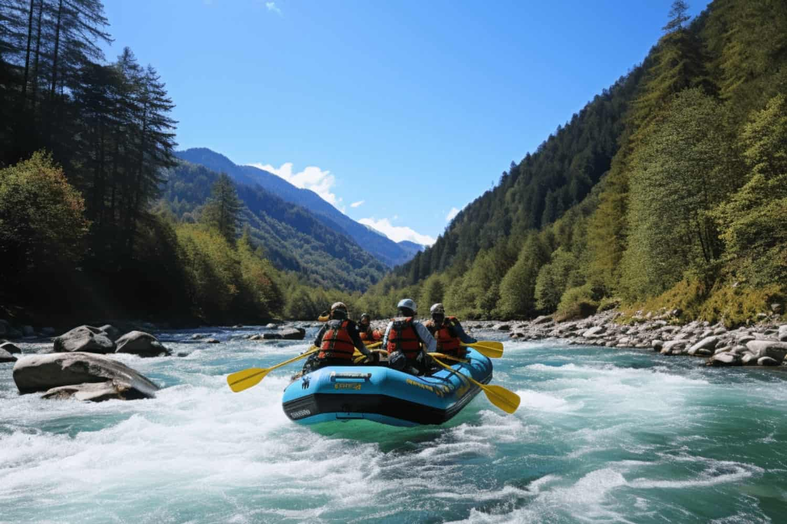
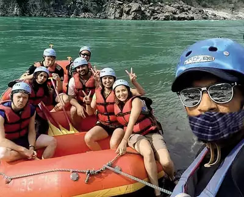
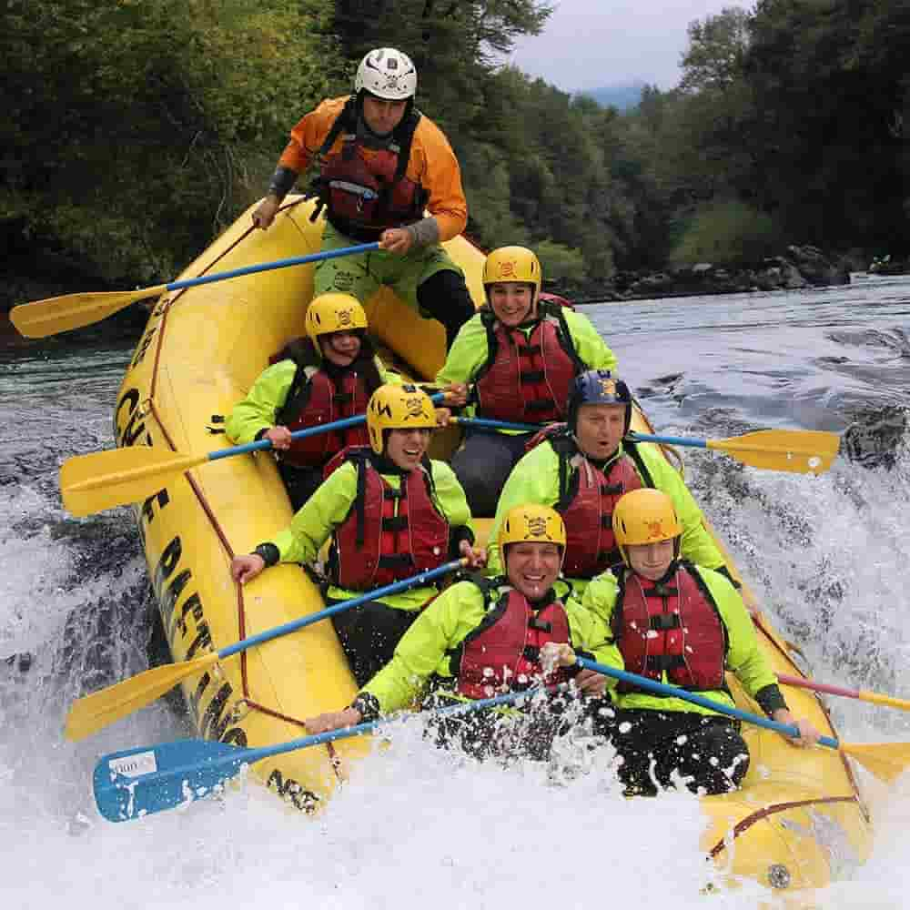
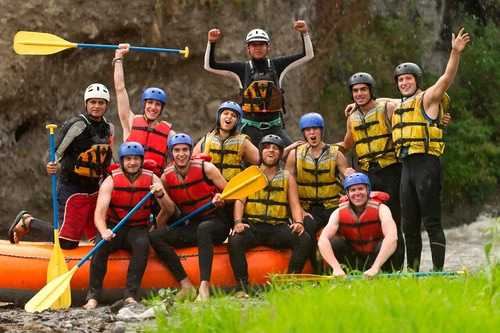
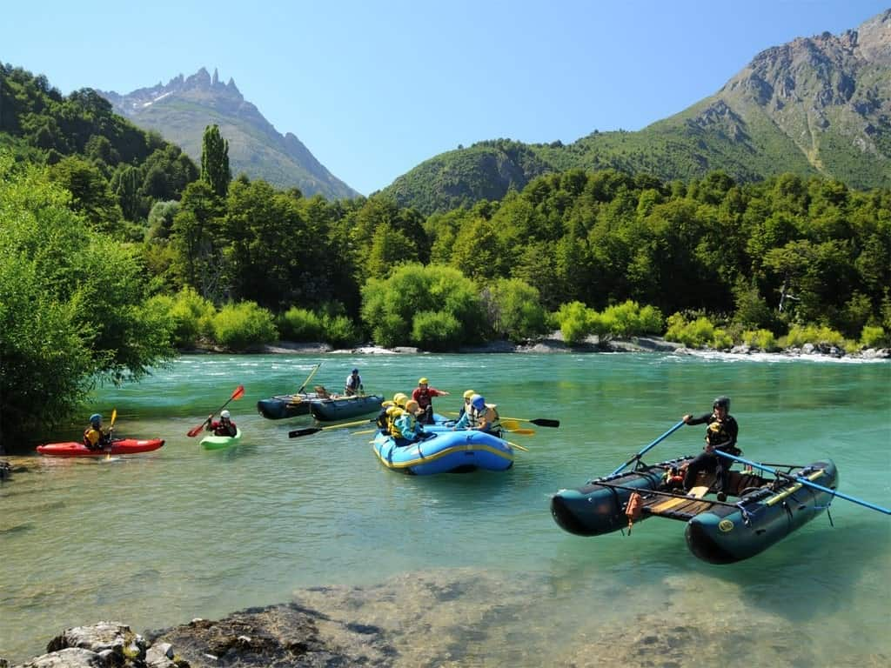
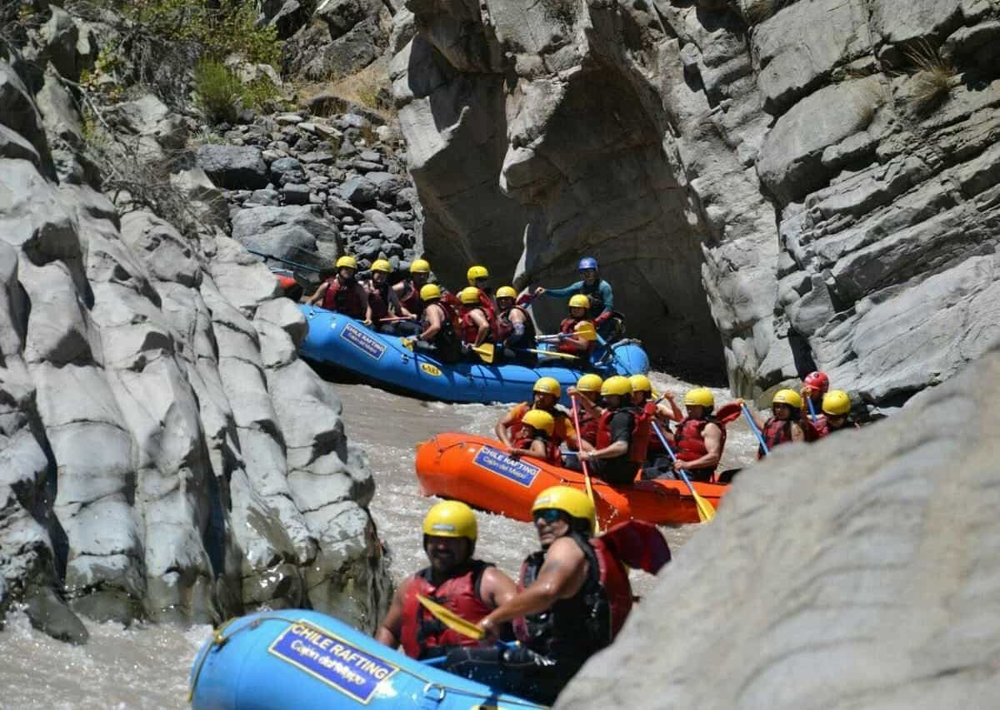
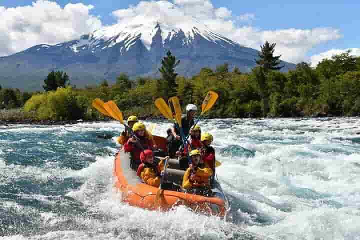

Our mission is to provide thrilling white water rafting experiences that combine excitement, safety, and natural beauty. Whether you're a first-timer or an experienced rafter, we have adventures for everyone. Join us for the experience of a lifetime!


White Water Rafting Adventures
History
Founded in the heart of adventure country, White Water Rafting has been guiding thrill-seekers down the rapids of Villarica for over 20 years. Our expert guides, deep knowledge of the rivers, and unwavering commitment to safety have made us the top choice for white water rafting in the region. Whether you're looking for a heart-pounding adventure or a serene journey through the breathtaking landscapes of Patagonia, we cater to all levels of experience.
Our rafting expeditions take you through some of the most scenic and untamed waters, allowing you to immerse yourself in nature's beauty while enjoying the thrill of navigating rapids. We pride ourselves on offering not just an adventure but a full experience—complete with world-class equipment, personalized service, and a team of passionate professionals ready to ensure your safety and enjoyment.
Adventure Awaits You!

Family Time
Time with Friends
Views of Patagonia
Beautiful Trails
Volcano view of Villarica